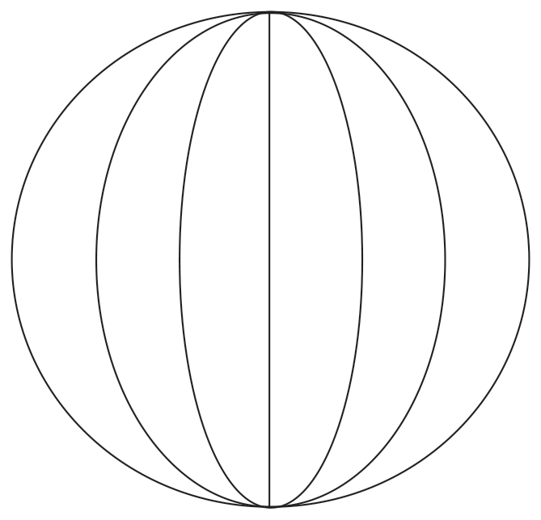
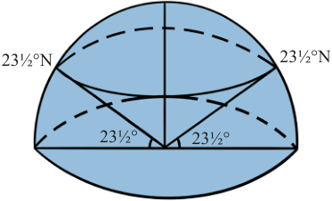
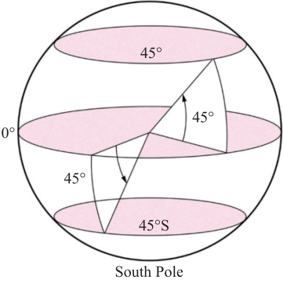

they converge towards the poles. Figure 3.12 shows how the meridians look like.

Determining latitudes
Latitude is the distance measured in angles of any point North or South of the equator at which a perpendicular line is established from the centre of the Earth towards the North Pole or the South Pole (90º). Any angular measurement from the earth’s centre to its surface represents certain latitude (Figures 3.13a and b). The distance from the North Pole to the South Pole is about 20000 kilometres, and there are 180º (half a circle) between them. For example, the tropic of cancer is drawn on the surface of the Earth with an angular line of 23½º N measured anticlockwise from the equator. Latitudes are parallel to each other. They result into uniform width between them. They have different lengths, decreasing from the equator towards the poles. Equator is the longest latitude at the centre of the Earth. Therefore, the distance on the earth’s surface between one latitude and the other must be equal to 111 kilometres.

90°Figure 3.13(a): Determining latitudes

North PoleDetermining longitudes
A longitude is an imaginary line measured from east or west of the prime meridian. The angle of longitude is determined by measuring the angle from the centre of the earth along the equatorial plane, East or West of the prime meridian. Since the world is about 40000 kilometres round at the Equator and there 360° in a circle, the distance between each degree of longitude at the equator must be: